帧来源raw_world
尺度模式frequency_primary
当前主链[8, 8] / 64 点
频相滤后221 点
最终融合221 点
总耗时1697.4 ms
路线结论
可见周期充足，优先使用 2026-04-22 频相主拓扑恢复，再用实例图谱校验。
本报告实现的技术路线是：组合响应 -> 尺度判别 -> 频相拓扑 / 钢筋面补全 / 实例骨架 -> 梁筋 ±13cm 点级排除 -> 3/4/5/6 局部收束 -> 多源融合。
注意：梁筋 mask 只过滤最终绑扎点，不把普通钢筋线从图谱里直接删掉；这样钢筋穿过梁筋的情况仍能参与拓扑恢复。
候选来源对比
| 来源 | 名称 | 点数 | 均值响应 | 说明 |
|---|---|---|---|---|
frequency_phase_after_beam |
频相主拓扑 + 梁筋 ±13cm | 221 | 0.535 | 22 日频相恢复负责远/中尺度高召回。 |
completed_surface_intersections_13cm |
补全钢筋面交点 + 梁筋 ±13cm | 64 | 0.654 | 近尺度补偿：分割缺线后用 line support 补全再求交点。 |
instance_graph_junctions_13cm |
实例骨架交叉点 + 梁筋 ±13cm | 86 | 0.953 | 不依赖理论周期，作为近距离和遮挡下的召回补充。 |
curve04_frequency_dp_13cm |
方案4 DP 曲线收束 + 梁筋 ±13cm | 221 | 0.957 | 以频相主线为基底，只在局部把线贴回真实钢筋。 |
multiscale_fused |
PR-FPRG-MS 多尺度融合 | 221 | 0.535 | 按尺度权重合并频相、补全面、实例骨架和曲线收束候选。 |
3/4/5/6 曲线收束对照
| 算法 | 点数 | 均值响应 | 是否兜底直线 |
|---|---|---|---|
03_recovered_greedy_curve |
220 | 0.886 | 否 |
04_recovered_dp_curve |
221 | 0.957 | 否 |
05_recovered_ridge_curve |
221 | 0.907 | 否 |
06_recovered_ir_assisted_curve |
221 | 0.936 | 否 |
每一步效果图
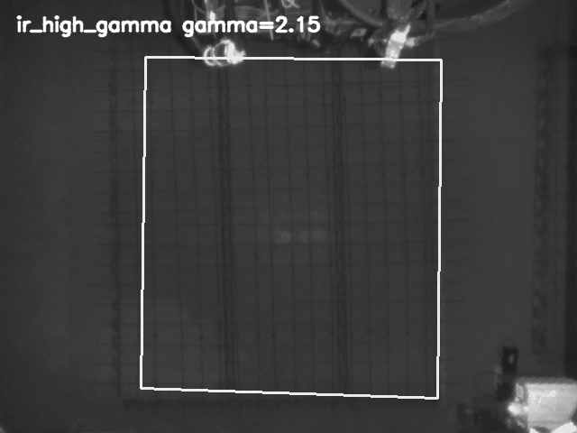
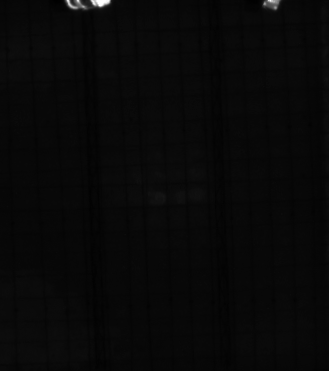
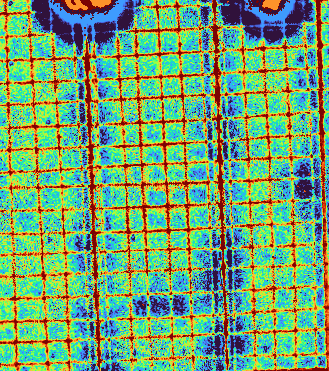
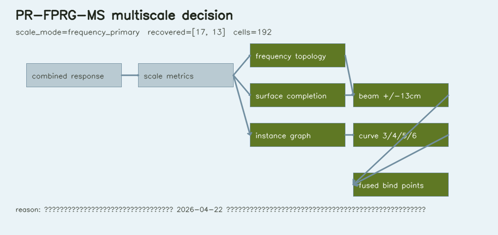
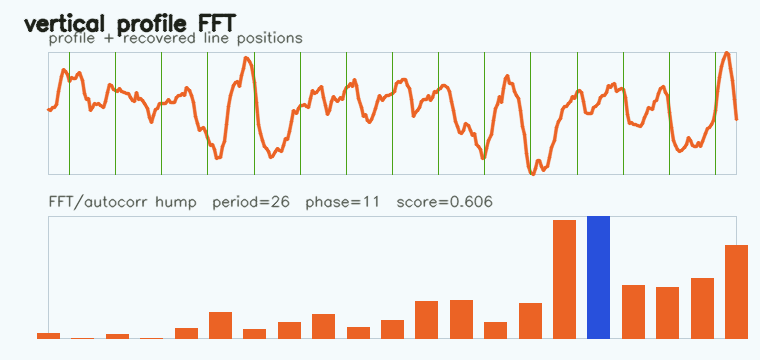
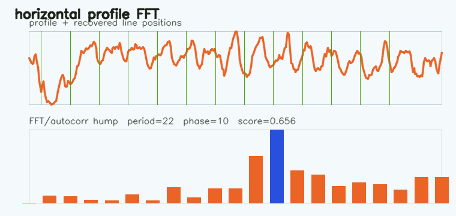
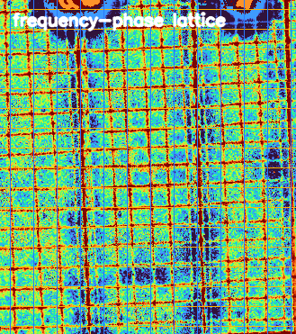
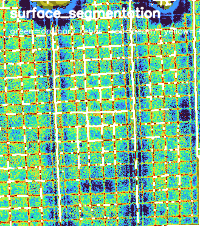
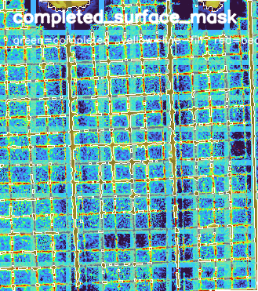
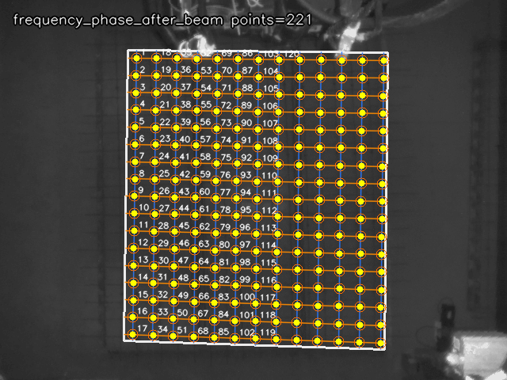
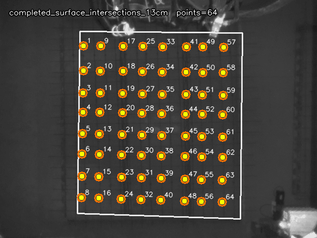
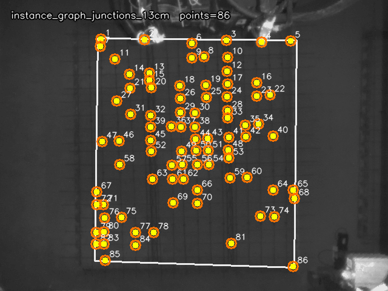
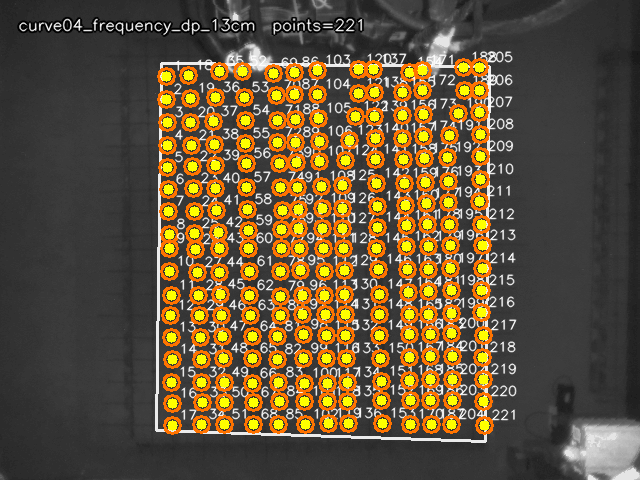
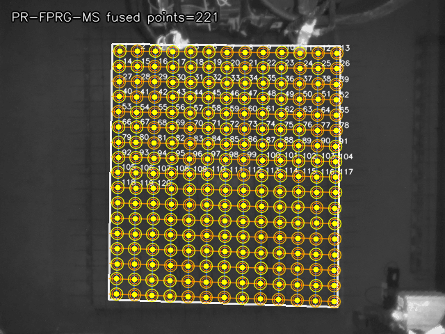
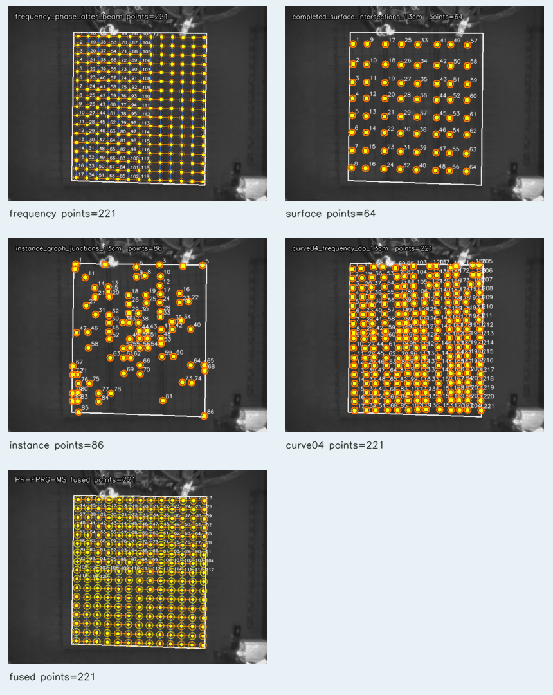
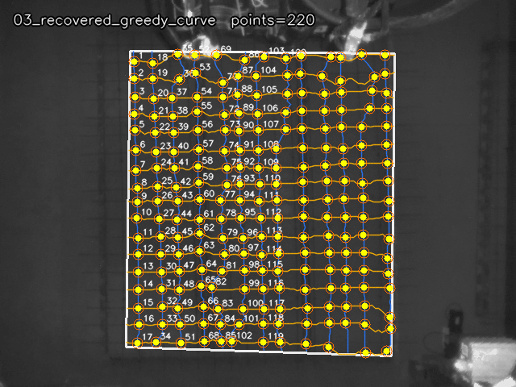
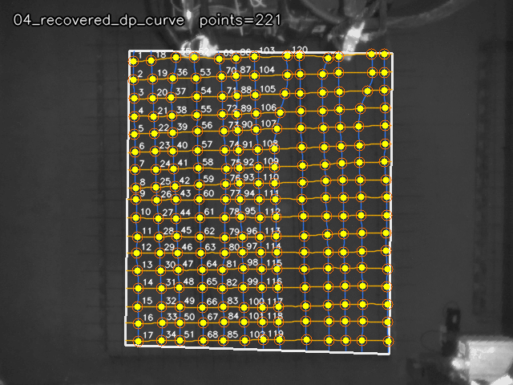
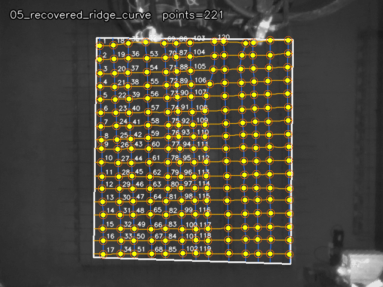